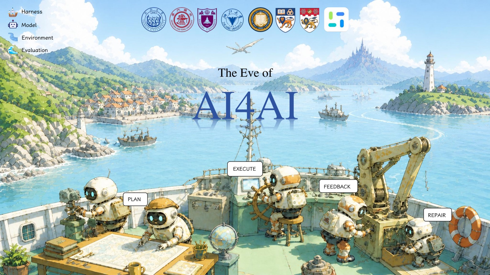
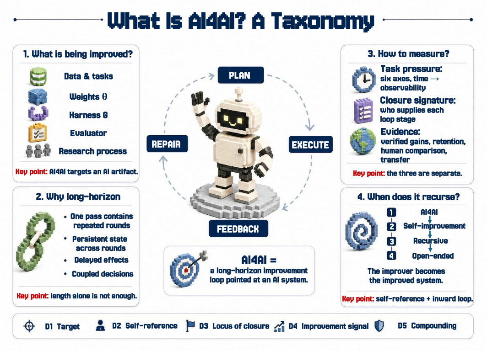

Paper · August 2026 论文 · 2026 年 8 月
On the Eve of AI4AI
From long-horizon agents to recursive self-improvement. 从 long-horizon agent 到 recursive self-improvement。
Definitions, reliable horizons, and open problems. 定义、可靠 horizon 与开放问题。
1Tongji University · 2Shanghai Jiao Tong University · 3Nanjing University · 4Zhejiang University · 5UC Berkeley · 6Simple Agent Lab · 7National University of Singapore · 8Nanyang Technological University
Abstract: The release notes of Claude Fable 5, GPT-5.6, Kimi K3, and GLM-5.2 point at one thing: keep a model working on agentic tasks, and let it evolve from its own execution. Whether AI can improve AI still draws conflicting answers, largely because the relevant literatures do not define autonomy and improvement the same way. This survey covers more than 200 papers and technical reports, and defines long-horizon execution as a repeated plan–execute–feedback–repair loop. AI for AI introduces no new capability class: replace the target of one such execution, so that “finish this task” becomes “improve this system,” keep plan, execute, feedback, and repair as they are, and what comes out is AI4AI. We release a 67-entry benchmark inventory and a close analysis of 35 representative AI4AI systems. Agents are increasingly capable at reproducing, implementing, and optimizing executable artifacts, while research judgment, experimental sufficiency, and sustained post-peak improvement remain open. 摘要：Claude Fable 5、GPT-5.6、Kimi K3、GLM-5.2 的发布材料指向同一方向：让模型持续执行 agentic 任务，并从自身的执行过程中进化。围绕“AI 能否改进 AI”的结论仍存在分歧，这在很大程度上源于各文献对“自主”与“改进”的定义并不一致。本文综述 200 余篇论文与技术报告，将 long-horizon execution 定义为反复执行的 plan–execute–feedback–repair 闭环。AI for AI 并未引入新的能力类别：将一次 long-horizon execution 的 target 从“完成这个任务”替换为“改进这个系统”，plan、execute、feedback、repair 四个阶段原样保留，所得即为 AI4AI。我们发布一份 67 条目的 benchmark inventory，以及对 35 个代表性 AI4AI 系统的细致分析：agent 在复现、实现与优化可执行产物上日益胜任，研究判断、实验充分性与越过峰值之后的持续改进仍是开放问题。
The survey covers the component capabilities that AI4AI requires and how they are measured today, gives a taxonomy for locating where the loop closes, analyzes reliable execution within the coupled model, harness, environment, and evaluation stack, unfolds in depth along the model and harness routes, and ends with the failures that bound recursive improvement. 这篇综述覆盖 AI4AI 需要的各种组件能力，以及它们目前的度量方式；给出一套定位自主范围的 taxonomy，把可靠执行放在 model、harness、environment、evaluation 四层耦合的框架下分析，并沿 model 与 harness 两条路线深度展开；最后总结限制递归改进的各类失败。

AI4AI is a long-horizon loop pointed at an AI system AI4AI 是一个指向 AI 系统的 long-horizon 闭环
Long-horizon is often equated with long context, many turns, or many tool calls; these proxies are insufficient. We define it structurally: given a goal, a system plans a route, executes against an environment, ingests feedback, and repairs its plan, state, or environment before continuing. A task is long-horizon when success requires this loop to be closed and repeated, so that information and consequences produced by earlier passes must be preserved and validated by later ones. Task pressure arrives along six coupled dimensions: time, steps, context, grounding, verification, and dependency. long-horizon 常被等同于长 context、多轮交互或大量 tool call，这些代理指标并不充分。我们按结构定义：给定一个 goal，系统 plan 一条路径，对 environment execute，摄入 feedback，并在继续之前 repair 其计划、状态或环境；当成功要求该闭环被闭合并重复，使早先产生的信息与后果必须被后续 pass 保留和验证时，任务才是 long-horizon 的。task pressure 来自六个相互耦合的维度：时间、步数、context、grounding、verification 与依赖。

Where closure sits 自主到哪一步
Our taxonomy locates a system along five dimensions—what the loop may change (target), whether the improved system is the one doing the improving (self-reference), which stages the system supplies (closure), how much room the improvement signal leaves (grounding), and whether gains accumulate or transfer (compounding)—of which closure does most of the discriminating work. This is formalized as the five-tuple (goal, plan, execute, feedback, repair).
我们的 taxonomy 用五个维度定位一个系统：闭环可以改动什么（target）、被改进的系统是否即执行改进的系统（self-reference）、五个环节里哪些是系统自主完成的（closure）、improvement signal 空间有多大（grounding），以及增益是否累积或可迁移（compounding），其中承担主要区分工作的是 closure。形式化为：(goal, plan, execute, feedback, repair) 五元组。
| Paradigm 范式 | Target target | Self-reference self-reference | Typical closure 自主范围 |
|---|---|---|---|
| AutoML / NAS | architectures and hyperparameters 架构与超参 | no 否 | humans fix the goal and the search space; the system closes execute only 只有 execute 是系统自主的，goal 和搜索空间由人定 |
| AI4AI | any part of an AI system AI 系统的任何部分 | not required 不要求 | the system closes plan and execute; feedback is mix under a human-written evaluator plan 与 execute 是系统自主的，feedback 在人写的 evaluator 下记为 mix |
| Recursive self-improvement | the improvement mechanism itself 改进机制本身 | required 要求 | all four execution stages close; the goal is still given by humans 四个执行阶段都是系统自主的，goal 仍由人定 |
A fixed harness (ReAct, Reflexion, MemGPT) extends the reliable horizon, but the agent mechanism itself is not improved. Letting an outer agent search over scaffold code (ADAS, Meta-Harness) keeps the improver and the improved as two roles. An agent editing its own code (Darwin Gödel Machine, Self-Harness) still answers to a fixed evaluator. The loop only becomes truly recursive once the feedback from an improvement enters the very process that proposes the next one. Distinguishing these levels keeps every prompt search from being called recursive self-improvement: on Terminal-Bench 2.1, once feedback and inference budget are matched, automated harness evolution does not reliably beat a simple test-time scaling baseline. 固定的 harness（ReAct、Reflexion、MemGPT）能延长可靠 horizon，但"Agent 机制"本身没有改进；让外部 agent 搜索 scaffold 代码（ADAS、Meta-Harness），改进者和被改进者仍是两个角色；agent 改自己的代码（Darwin Gödel Machine、Self-Harness），评判它的 evaluator 还是固定的。只有改进的反馈进入"提出下一个改进"的流程本身，闭环才算真正递归。分清这几级，才不至于把每次 prompt 搜索都叫成 recursive self-improvement，在 Terminal-Bench 2.1 上，把 feedback 和推理预算拉平之后，自动 harness 演化并没有稳定赢过简单的 test-time scaling 基线。
Two routes to a longer reliable horizon: model and harness 延长可靠 horizon：model 与 harness

Simplify the system: assume steps are independent; at 95% per step, finishing 100 steps leaves under 1%. Real errors are not independent, so the number predicts nothing—it just sharpens the question: which part of the loop does a method improve? Model-side work covers every stage, yet the longer the task, the further end-to-end reliability falls, as if each step lost a fixed fraction. So the reliable horizon comes down to the harness: can errors be contained, and can the system recover. This matters more than it seems—between frontier models of similar capability, changing the harness can matter more than changing the model, even reversing rankings; swapping the scaffold alone moves one model's accuracy by 28 points, more than most of the model gaps people argue about. 把系统简单化：假设每步独立，单步成功率 95%，走完 100 步就只剩不到 1%。真实的错误不独立，这个数字不是预测，它只是把问题问准：一个方法改的是哪一环。model 侧每一环都有工作，但任务越长，端到端可靠性还是一路往下掉，像每走一步都固定折损一点。所以可靠 horizon 最终看 harness：错误压不压得住，错了能不能恢复。这比看上去更重要——能力相当的前沿模型之间，换 harness 的差异可以超过换模型，甚至反转排名；只换 scaffold，同一个模型的准确率就能差出 28 个百分点，比大家常争的模型差距还大。
Why composition is less reliable than its parts 组合为何更不可靠
Components that work in isolation become less reliable once composed, for two reasons: the weakest link sets the whole—any required component can terminate the pass, so scores measured in isolation do not measure the full system—and handoffs lose information, since compression and summarization can remove a constraint that only a later experiment needs. The paper follows the resulting failures across four scales: 组件分开都能用，组合成系统反而更不可靠，原因有两条：一是最弱的一环决定整体，任何一个必需组件失败都会终止整个 pass，所以分开测的分数不代表完整系统；二是交接会丢信息，压缩和摘要可能删掉某个后面才用得上的约束。论文把由此产生的失败按四个尺度展开：
- Within one pass. Planning, grounding, and tool use are tightly coupled: a local error—the wrong control, the wrong file, the wrong database row—reshapes the future state space, so later observations look self-consistent while drifting from the goal. 单次 pass 之内。plan、grounding 与工具调用紧密耦合：一个局部错误——点错控件、改错文件、写错数据行——就会改变后续的状态空间，之后的观察看起来自洽，实际已经偏离 goal。
- Across passes. Memory can retrieve stale state, and lossy summaries can drop task-critical constraints; an early mistake enters the trajectory and cascades, so later decisions stay coherent with the record while being causally downstream of the fault. 跨 pass。记忆可能检索到过期状态，有损摘要可能压掉任务关键的约束；早期错误一旦进入轨迹状态就层层传导，后续决策与记录看似连贯，因果上却继承了那个错误。
- Across generations. When a system both proposes and judges an improvement, their agreement is not evidence; recursive training on generated data can erode retained capabilities, and a weakening proxy invites reward hacking. In RSIBench-Data, more than three quarters of searches that continue past their best checkpoint terminate below it. 跨代际。系统自己提出改进、又自己评判时，两者一致不构成证据；在生成数据上递归训练会侵蚀原有能力，proxy 变弱则引来 reward hacking。RSIBench-Data 里，越过最佳 checkpoint 还继续搜索的运行，超过四分之三最终停在峰值之下。
- Evidence and control. Gains can be bought with budget, so a success rate is only readable alongside tokens, wall-clock time, verifier cost, and human intervention—together with model–harness attribution, contamination controls, and disclosed oversight. 证据与控制。增益可以用预算买来，所以成功率只有和 token、时间、verifier 成本、人工介入放在一起才可读；此外还需要 model–harness 归因、污染控制和 oversight 披露。
Conclusion 结论
Back to where we started: the release notes of frontier models are pushing agents toward the same thing—sustained execution, and evolving from that execution. The judgment of this survey is that what AI4AI lacks has never been capability: plan, execute, feedback, and repair are each already strong on their own, and across the 35 systems execute is fully system-owned. What is missing is the authority to decide—no system picks its own goal, and none can judge what counts as “better” without a human. So “can AI improve AI” is no longer a question of whether the work can be done, but of who defines “better.” The eve ends the first time a system, with no human-specified goal or evaluation, has successors that reliably strengthen it. We hope this taxonomy and this audit help that moment arrive a little sooner. 回到开头：前沿模型的发布材料都在把 agent 推向同一件事，持续执行，并从执行中进化。这份综述给出的判断是，AI4AI 缺的从来不是能力：plan、execute、feedback、repair 每一个单独能力已经很强，35 个系统里 execute 更是全部自主。缺的是决策权，没有一个系统自己选目标，没有一个能不靠人判定“什么算更好”。所以“AI 能否改进 AI”已经不是能不能做事的问题，而是谁来定义“更好”的问题。当某个系统第一次在不由人指定目标与评测的前提下，后继者稳定强化自己，前夜就结束了。我们希望这套 taxonomy 和盘点，能让那一刻到来的更早一些。
← Back to Simple Agent Lab ← 返回 Simple Agent Lab